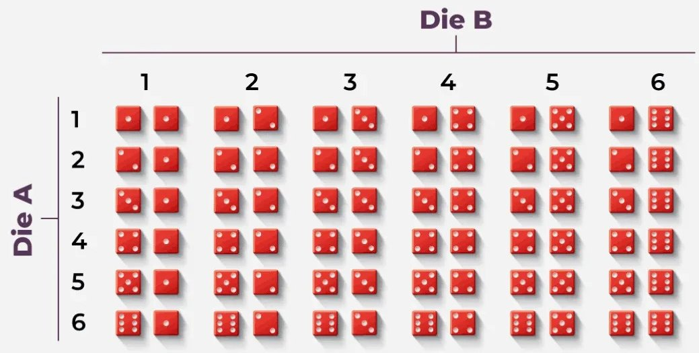
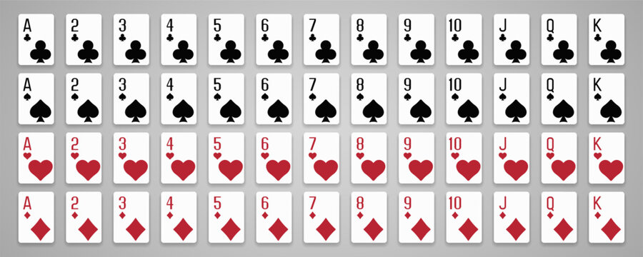

A biologist plants three seeds labeled \(A\text{,}\)\(B\text{,}\) and \(C\text{.}\) After seven days, each seed has either germinated or not germinated. An outcome records the results for seeds \(A\text{,}\)\(B\text{,}\) and \(C\text{,}\) in that order.
In a simplified model of pea plant genetics, each parent has one dominant allele \(P\) and one recessive allele \(p\text{.}\) An offspring receives one allele from each parent. The four equally likely allele combinations are \(PP\text{,}\)\(Pp\text{,}\)\(pP\text{,}\) and \(pp\text{.}\) A plant has purple flowers if it receives at least one \(P\text{.}\)
Example3.1.2.1.Probabilities of Sums from Two Dice.

The diagram is a 6-by-6 grid representing all possible outcomes from rolling two six-sided dice. Die A labels the rows from 1 through 6, and Die B labels the columns from 1 through 6.
Each cell contains a pair of red dice. The first die displays the number associated with that row, and the second die displays the number associated with that column. For example, the cell in row 3 and column 5 represents Die A showing 3 and Die B showing 5. Each of the 36 possible ordered outcomes appears exactly once.
Consider rolling two fair six-sided dice and recording the sum of the numbers rolled. Find the probability of obtaining each sum from 1 through 12. Write each probability first as a reduced fraction and then as a decimal rounded to four decimal places.
Example3.1.2.2.Probabilities from a Deck of Cards.

The image displays all 52 cards in a standard deck with no jokers. The cards are arranged in four rows, one for each suit. From top to bottom, the suits are clubs, spades, hearts, and diamonds. Clubs and spades are black, while hearts and diamonds are red.
Each suit contains 13 cards. From left to right, they are the ace, the numbered cards 2 through 10, the jack, the queen, and the king. The jack, queen, and king are called face cards. Therefore, each suit has three face cards and the full deck has 12 face cards.
The ace is a separate rank and is not considered a face card. Although an ace may represent a high or low value in some card games, it is not considered a numbered card in this example. The numbered cards are 2 through 10.
One card is selected at random from a standard 52-card deck with no jokers. Find each probability. Write each answer first as a reduced fraction and then as a decimal rounded to four decimal places.
Human blood can be classified using the ABO blood group and the Rh factor. The ABO system classifies blood as type A, B, AB, or O based on the antigens found on the surface of red blood cells. The Rh factor classifies blood as positive or negative based on whether the Rh antigen is present. These are estimated frequencies for educational purposes, not observations from a sample of exactly 1,000 people.
A study is conducted to consider the association between the sulfur dioxide level in the air and the mean number of chloroplasts per leaf cell of trees in the area. A sample is chosen of 10 areas known to have a high sulfur dioxide concentration, 10 known to have a normal level of sulfur dioxide, and 10 known to have a low sulfur dioxide concentration. Twenty trees are randomly selected from each level, and the mean number of chloroplasts per leaf cell is determined for each tree. On this basis, each tree is classified as having a low, normal, or high chloroplast count.
A wildlife biologist studies fungal infections in two separate animal populations. Of the 60 bats tested, 9 have a fungal infection. Of the 70 frogs tested, 14 have a fungal infection. The biologist randomly selects one bat and one frog.
A study was conducted to ascertain factors that influence a physician’s decision to transfuse a patient. A sample of 49 attending physicians was selected. Each physician was asked a question concerning the frequency with which an unnecessary transfusion was given because anout physician suggested it. The same question was asked of a smaple of 71 residents.